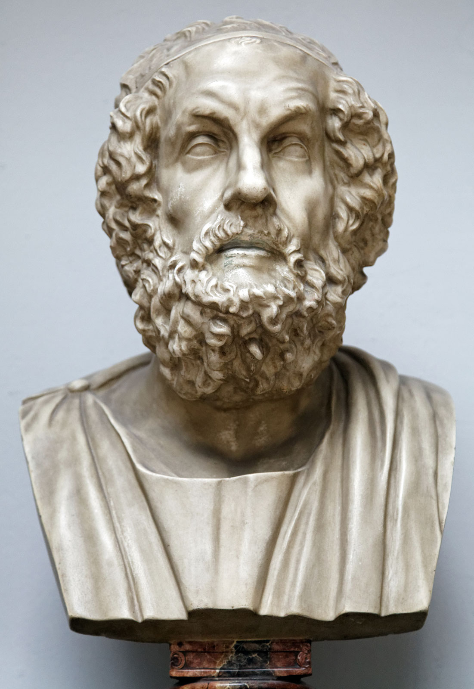
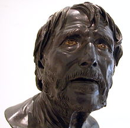
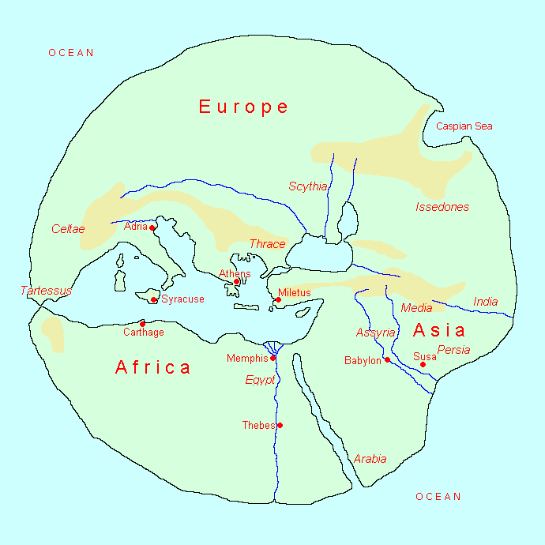
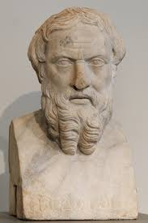
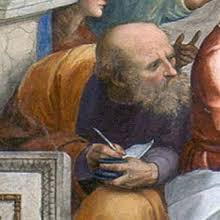
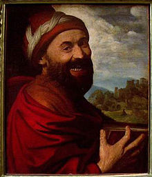
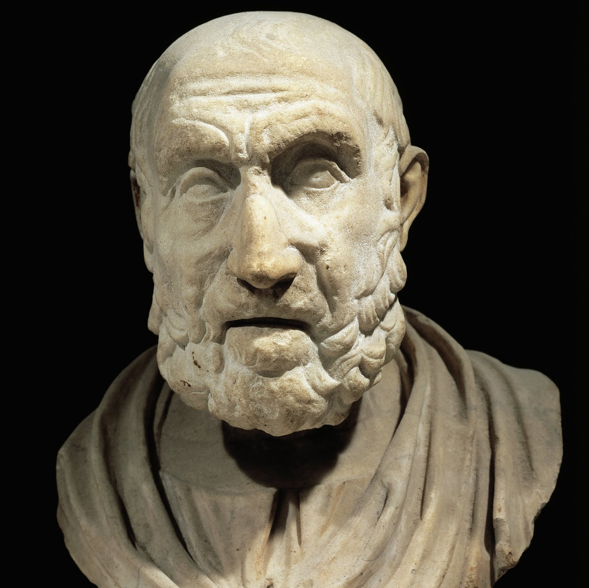
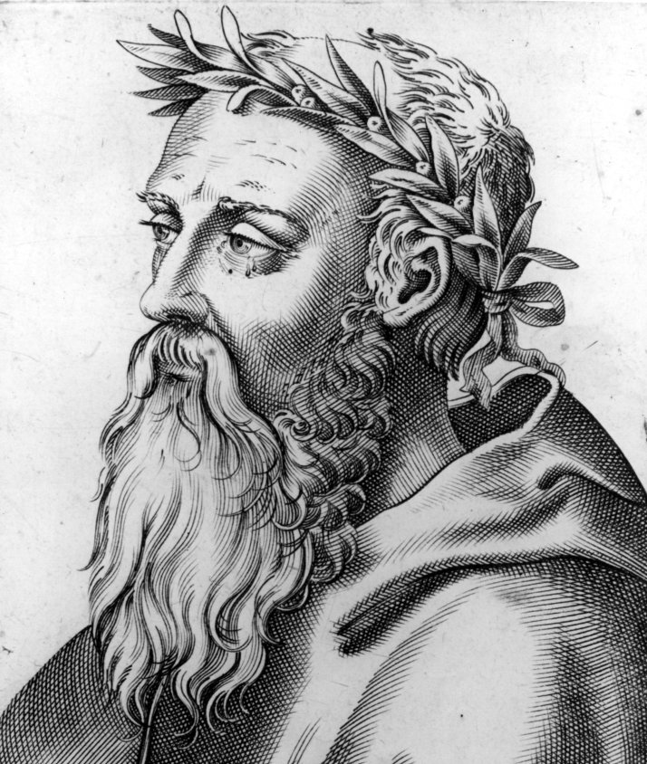

Luminaries
This is a brief overview of some luminaries from Ionia, but it is by no means comprehensive. Ionia was known for its early philosophers and writers of Epic poetry.
Homer
Homer was the earliest poet in Western culture whose works are still intact. He was born around 750 BC near Chios, although several other cities claim to be his birthplace. Homer is credited with composing the early Greek Epics: The Iliad, The Odyssey, and the Homeric Hymns, which were initially transmitted orally and not written down until much later. The Iliad and The Odyssey are divided into 24 books, corresponding to each letter of the Greek alphabet. The Iliad follows Achilles's anger and describes the final year of the Trojan War. The Odyssey takes place after the Trojan War and follows Odysseus's journey back home. Some historians doubt that both The Iliad and Odyssey were written by the same person; however, regardless of who Homer was, his works give us vital information about the Greek gods.


Hesiod
Hesiod was an early Greek Epic poet who lived around 700 BCE. He composed two complete surviving works: the Theogony and the Works and Days, which were both composed in the oral tradition. The Theogony explains the deities of Greece and their lineage while Works and Days deals with happenings of the farming year and recording the days of the month on which it was lucky or unlucky to do certain things.
Hecataeus of Miletus
Hecataeus wrote about Greece's early history and geography around the early 5th century BCE. He is known to have written the Genealogia (Historiai or Heroologia) which consisted of four books of the traditions and mythology of the Greeks, but only fragments of the books survive today. He also wrote the Periodos ges (Periegesis) which describes the people around the Mediterranean and Black seas. His work was acknowledged by the historian Herodotus who frequently complained about it.


Herodotus
Herodotus was born around 484 BCE and wrote the first great narrative history in the ancient world, History, which detailed the growth and organization of the Persian empire, the geography, the social structure, and history leading up to Xerxes' invasion of Greece. He is the leading source of historical information from 550-479 BCE about Greece, western Asia, and Egypt.
Thales of Miletus
Thales was a pre-Socratic philosopher who lived from around 624-546 BCE. He is considered the first philosopher and father of Western philosophy since he rejected supernatural and mystical explanations of phenomena. He wrote two works, On the Solstice and On the Equinox, that have not survived. However, Aristotle's Metaphysics tells Thales' belief that everything comes out of water and that the earth floats on water. According to Seneca, Thales used this theory to explain earthquakes. Thales is also famous for bringing the discipline of mathematics to Greece from Egypt. He made many important mathematical discoveries, such as Thales' theorem, which states that a triangle inscribed in a semi-circle is always a right triangle.


Anaximander of Miletus
Anaximander was a pre-Socratic philosopher who lived from around 610-545 BCE. He was the first to develop a systematic philosophical view of the world, or cosmology. Only fragments of his work survive, but his ideas are written by authors such as Aetius, Hippolytus, and Simplicius. His most famous idea is that everything originated from the apeiron ("infinite") rather than a particular element and that the rotary motion of the origin of the world caused opposites of hot and cold. He believed that the world would eventually be destroyed back into the apeiron. Anaximander held an evolutionary view that man originated from fish. Anaximander also believed that Earth was a cylinder and that the Sun and Moon were hollow rings filled with fire.
Democritus
Democritus was a contemporary of Socrates who lived from around 460-370 BCE. He was known as the 'laughing philosopher' because of his cheerful disposition. He is known for claiming that the world and humans were composed of very small particles called atomos ("un-cuttables") that make up everything. Democritus also posited that the universe could be a multi-verse with other planets sustaining life. In addition, he claimed that the soul was composed of fire-atoms while the body was made of earth-atoms and that the earth-atoms needed the energy of the fire-atoms for cohesion.


Hippocrates
Hippocrates is the most famous physician in antiquity and was born on Kos in the 5th century BCE. He established a medical school, wrote treatises about medical matters, and is credited with being the founder of modern medicine since he was the first to separate medicine from philosophy and religion. He wrote over 60 treatises in the four main categories of diagnosis, biology, treatment, and general advice for doctors. He also discussed ethics and medicine's relation to other subjects. However, the famous Hippocratic oath of ethics taken by physicians probably appeared after his lifetime and was not actually written by Hippocrates.
Heraclitus
Heraclitus was a Greek philosopher known for his views on cosmology, where he believed that fire forms the basic material of the universe. He also believed that people needed to live together in social harmony. Most people failed to comprehend logos through which all things are interrelated and thus lived like dreamers with a false view of the world. The book that he wrote was lost, but his views are found in short fragments quoted and attributed to him by later authors.
